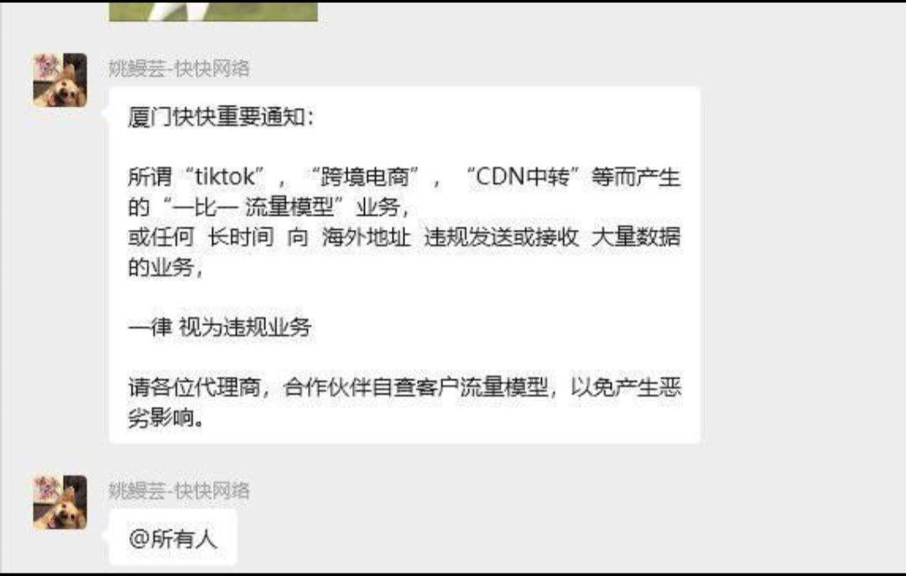
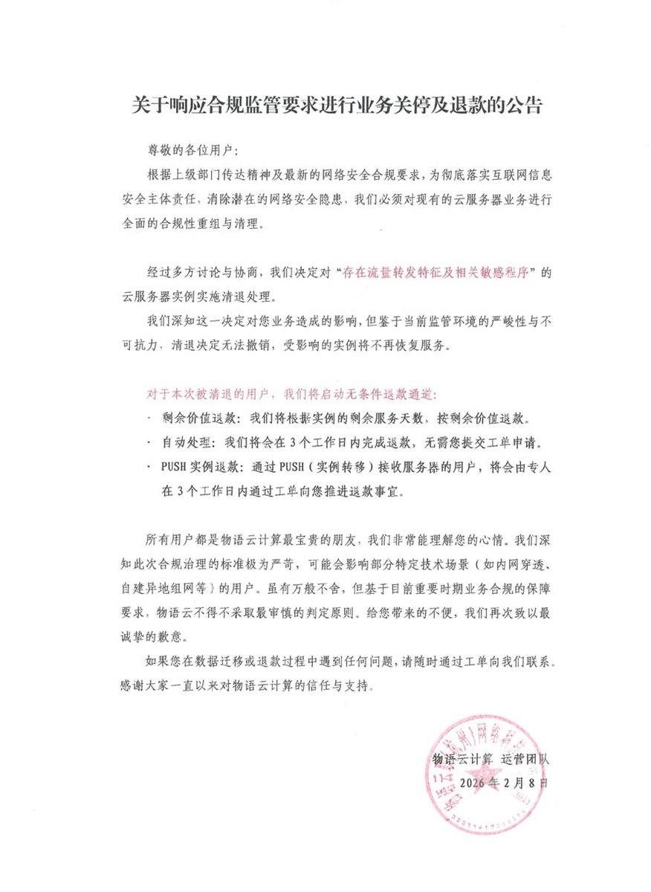
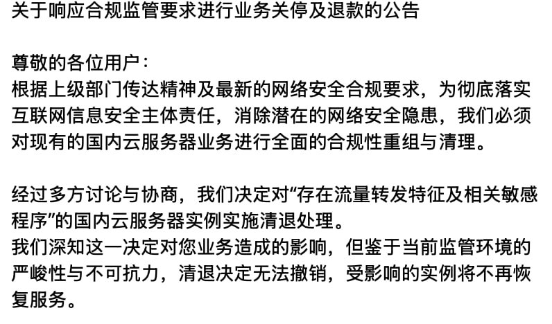

拱北靠北
@psyofsouthwest
RT @Moelin_Moe: 高速冲浪
厦门快快网络 kkidc（大部分厦门/泉州中转服务器的上游）
物语云（宁波电信/绍兴BGP中转服务器上游）
等多家IDC已经发通告，对于上下对称/长时间海外流量的服务器视为违规业务
现在ip通报日益严重，很多资源挤在江门，并且最近江门有…



Moelin雲墨 凌
@Moelin_Moe
高速冲浪
厦门快快网络 kkidc（大部分厦门/泉州中转服务器的上游）
物语云（宁波电信/绍兴BGP中转服务器上游）
等多家IDC已经发通告，对于上下对称/长时间海外流量的服务器视为违规业务
现在ip通报日益严重，很多资源挤在江门，并且最近江门有大面积攻击，有的时候和盾都难以缓解 https://t.co/YlON1TqK6k